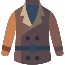
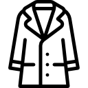
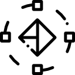

parallax scroll
1.18.2/TweenMax.min.js
2.0.5/plugins/animation.gsap.js
1.11.2/jquery.min.js
2.0.5/ScrollMagic.min.js
2.0.5/plugins/debug.addIndicators.min.js
../css/style.css (components/modules_vicmod/_tween_002.css)
ScrollMagic tutorial


Section With Parallax Effect
blah blah blah blah blah blah blah blah blah blah blah blah blah blah

001
take notice that i refer to button using 'this.children[0]'
obj01
002
obj02
003
obj03
>